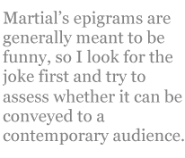

Susan McLean
Translations of Latin epigrams by Martial
1.102
I’d say the painter of your Venus tried
to show he’s really on Minerva’s side.
Qui pinxit Venerem tuam, Lycori,
blanditus, puto, pictor est Minervae.
2.21
Some get your kiss: some, a handshake. You demand
“Which would you like? You choose.” I’ll take the hand.
Basia das aliis, aliis das, Postume, dextram.
dicis ‘utrum mavis? elige.’ malo manum.
11.44
You’re childless, rich, and old as the Republic.
Do you suppose your friendships are all true?
Some are — from back when you were young and poor.
Your new friends would be glad to bury you.
Orbus es et locuples et Bruto consule natus:
esse tibi veras credis amicitias?
sunt verae, sed quas iuvenis, quas pauper habebas.
qui novus est, mortem diligit ille tuam.
12.73
You tell me I’m your heir, Catullus. Still,
I won’t believe it till I read the will.
Heredem tibi me, Catulle, dicis.
non credo nisi legero, Catulle.
12.91
Magulla, you share your husband’s bed
and the boy he sleeps with. Why not, too,
the boy who pours his wine? You sigh.
Aha! You fear he’ll poison you.
Communis tibi cum viro, Magulla,
cum sit lectulus et sit exoletus,
quare, dic mihi, non sit et minister.
suspiras; ratio est, times lagonam.
Translator’s comment: Cutting to the Bone
When I translate Latin poetry, I often annoy classicists because I don’t preserve the Latin meter of the poem I am translating and I do add rhyme to it (although rhyme was not known in Latin until the Middle Ages). But I am not writing my translations for classicists, who can read the poems in the original language. I am writing for English readers who have little or no Latin, who often would not even recognize a classical meter if I used it, but would mistake it for free verse with an awkward and monotonous rhythm. The languages are so different that the poetic practices of one are poorly suited to the other. Latin meter is based on long and short vowels, English meter on stressed and unstressed syllables, so to try to impose the Latin pattern on English is already changing it in highly significant ways. English also has shorter words than Latin, so trying to maintain the same syllable count as a Latin poem usually requires an English poet to pad the line by means of redundant phrases or invention. Latin words can be arranged in different orders without changing the meaning of the sentence, but in English the order of words is crucial for determining their meaning. A translator therefore needs to rearrange the content of Latin lines drastically for them even to make sense to readers.
Given these differences between the two languages and their poetic practices, I have chosen to cut down to the bones of the poems and rebuild them from the skeleton outward. I try to maintain the meaning, tone, and polish of the original poem, while using the poetic devices and rhythms of English poetry. Martial’s epigrams are generally meant to be funny, so I look for the joke first and try to assess whether it can be conveyed to a contemporary audience. His jokes often use understatement and implication, so I try not to spell out the joke too directly. Sometimes, though, the difference between ancient Roman culture and contemporary culture is so great that I feel that I need to add information that will put the joke in a context for readers. The names that Martial used in his satirical epigrams were mainly invented, because it was just too dangerous for an impecunious poet to anger potential patrons by naming names. I have therefore chosen to omit the names in some cases, and not to repeat them in others, when the repetition seems mainly to have served the purpose of filling out the meter in a line.
English epigrams usually rely on the surprise of unexpected rhymes for much of their wit and humorous impact, so I tend to use rhymed couplets or rhyme every other line in longer poems. I try to let the length of Martial’s lines determine the length of my own, up to a point, using tetrameter for shorter lines and pentameter for longer lines. Though Martial frequently used elegiac couplets (alternating lines of dactylic hexameter and pentameter) I prefer to avoid hexameters, which tend to drag in English. Furthermore, I use iambic meter almost exclusively, because it is the meter in English that most closely approximates the rhythms of colloquial speech, and I am trying to capture a witty, conversational tone.
What still works in Martial’s satire, what enables many of his epigrams to remain funny today, is his devastatingly accurate knowledge of human nature: its hypocrisy, vanity, depravity, self-interest, and capacity for self-deception. Despite the slyness of his wit, and his caution in using pseudonyms for the targets of his satire, his attacks are hard-hitting and shrewd. His sexual frankness is so great that many of his epigrams would be censored in journals today; his jokes can seem mean-spirited in our times, which profess more tolerance for difference. Yet he does not exempt himself from his cynical scrutiny: his own venality, flattery, and sexual peccadilloes are subjected to the same ridicule that he heaps on others. In translating his poems I have tried, above all, not to blunt the edge of his wit, but to polish the blade until we can see ourselves in it.
Susan McLean is a professor of English at Southwest Minnesota State University in Marshall, Minnesota. Her translations of Latin and French poetry have appeared in The Classical Outlook, Literary Imagination, Measure, Iambs and Trochees, and elsewhere.
|